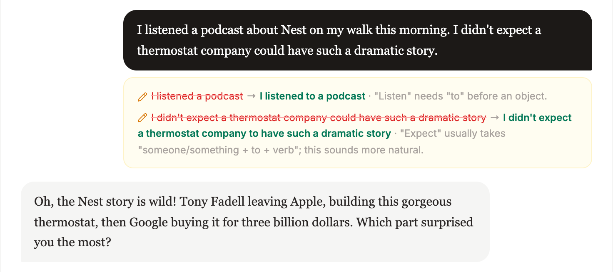
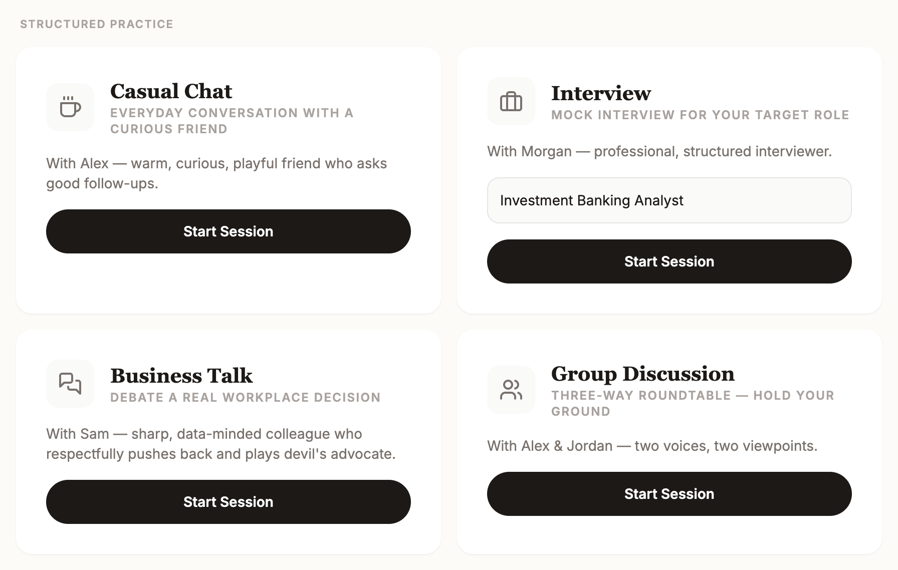
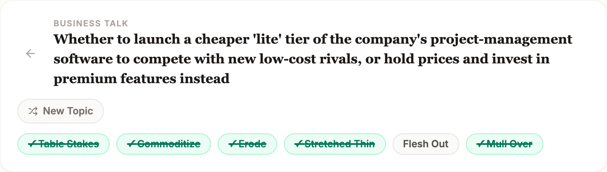
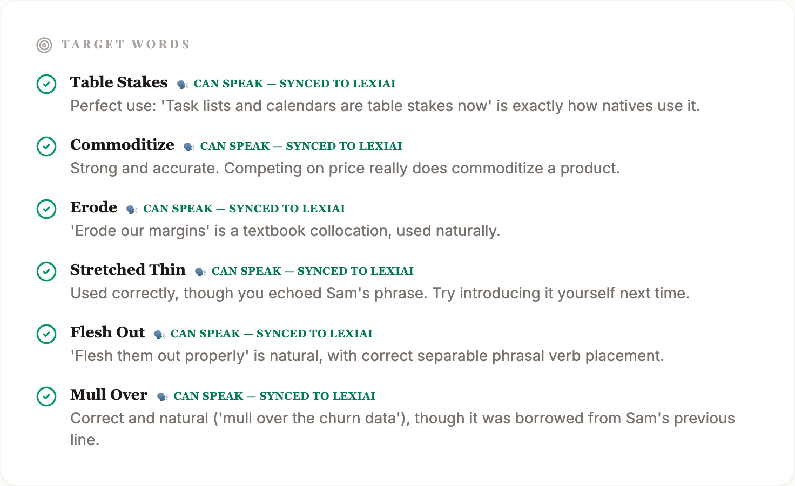
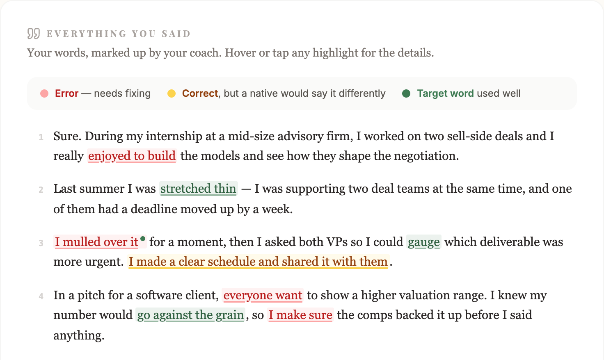
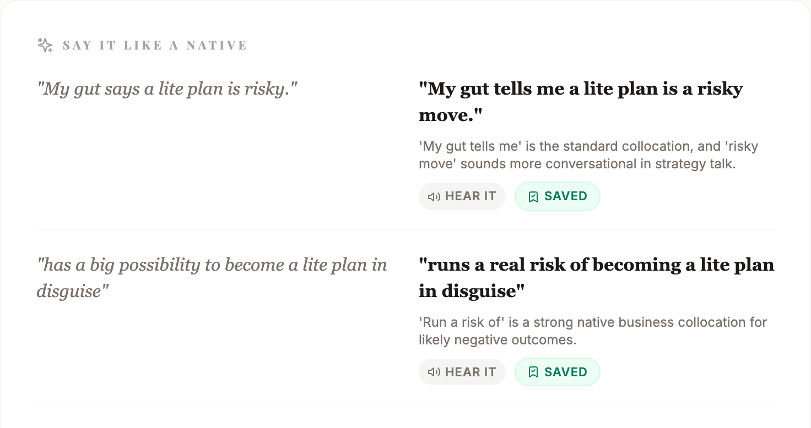
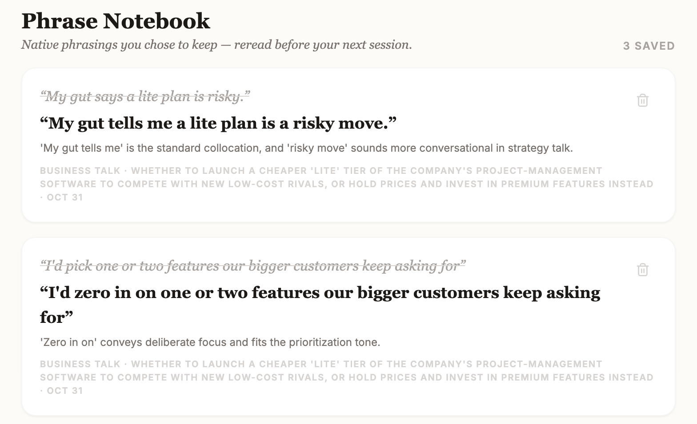

LexiSpeak
A speaking studio that turns the words I'm learning into words I actually say.
Watch it in 2 minutes
A narrated walkthrough of the real screens, with captions. It starts muted; tap Sound on to hear it.
Free Talk, with live fixes
An open-ended chat with Alex. Any slip gets corrected right under the message, and the conversation keeps going.

Practice for real situations
Four structured modes, each with its own partner: a casual chat with Alex, a job interview with Morgan, a business debate with Sam and a group discussion with Alex and Jordan.

Built on my LexiAI notebook
Each session targets 4–6 words from my LexiAI notebook. Words I use well are marked Can Speak and synced back to LexiAI.


A coaching report, line by line
After the session, everything said comes back in three colors: red for what to fix, amber for what a native speaker would say, green for target words used well.

Say it like a native, then keep it
The report rewrites stiff phrases the way a native speaker would put them. I can hear each one and save it to my Phrase Notebook.

